CloudForest is a collection of phylogenomic tools residing in the workflow application Galaxy. Both Galaxy and CloudForest are packaged within a Docker container.
Containers package application, OS and dependency code into images that can be run from variety of computing environments. CloudForest via Docker will run on Linux, Windows and MacOS.
To run CloudForest, you will have to install Docker. Please follow these instructions to install Docker for your operating system.
The CloudForest Docker image is stored on Docker hub.
NB: Docker commands are run from the terminal command line.
You can download the image to your computer with the following command:
docker pull cloudforestphylogenomics/cloudforest_galaxy:latestThis command contacts Docker hub and pulls down the latest image of CloudForest.
You can verify the download with the command:
docker imagesYou will see something like this:
cloudforestphylogenomics/cloudforest_galaxy latest 160a642eee15 4 days ago 2.12GBThe number 160a642eee15 is an arbitraty ID assigned to the container by Docker. You do not have to use the ID number.
In general you run any image with the following command:
docker run hello-worldThis is an actual run command that tests your Docker installation.
If Docker is installed correctly you should see the following output:
Hello from Docker!
This message shows that your installation appears to be working correctly.
To generate this message, Docker took the following steps:
1. The Docker client contacted the Docker daemon.
2. The Docker daemon pulled the "hello-world" image from the Docker Hub.
(amd64)
3. The Docker daemon created a new container from that image which runs the
executable that produces the output you are currently reading.
4. The Docker daemon streamed that output to the Docker client, which sent it
to your terminal.
To try something more ambitious, you can run an Ubuntu container with:
$ docker run -it ubuntu bashIt may be necessary to clean your docker installation periodically. Read about the prune command in the docker documentation. This command will remove all unused data and docker objects. Be careful using this command especially if you have not moved data files from the container into your local file space.
run.shA simple script run.sh is provided to run the project. To get started with a local instance without data perstitance, run:
./run.sh dev cloudforest_devThis builds an image named cloudforestphylogenomics/cloudforest_galaxy:dev, and runs it in a local container named cloudforest_dev. You may be prompted to confirm that the script may delete existing images or containers with the same name. To override this prompt, the -d flag may be used.
To run an instance with data persistence, first we need to create a volume, and pass it with -v as an argument to run.sh:
docker volume create cloudforest-volume
./run.sh -v cloudforest-volume dev cloudforest_devThe -s option can be used to enable SFTP for file-upload, which currently should only be used in a local, single-user context. See the Uploading Files section below.
Galaxy documentation recommends only using the basic local file upload for small numbers of files. For many files, or larger files FTP is recommended. Due to some limitations with running an FTP server within Docker, SFTP is a more viable method for uploading files in bulk.
This should not be used on an host that allows incoming network traffic, over has multiple users. In the current implementation of galaxy-docker from which CloudForest is built, the entire containerized Galaxy installation including uploaded data may be downloaded via SFTP by anyone with an account on the instance. For this reason it is only suitably run on a personal machine, for the time being.
The -s flag for run.sh may be used to enable SFTP on the instance. The SFTP port is forwarded to 8022 only on IP 127.0.0.1, just in case it is run on a publicly accessible host.
FileZilla or sftp may be used to upload files to the instance.
You should see on the right a hierarchy of directories /export/ftp/<your username>. Navigate to the files on your host machine in the left-hand pane, and drag the files you want to upload to the right-hand pane.
Once the files have been uploaded to the FTP location, they must still be imported into your history. This is done within Galaxy by navigating in the tool pane to Get Data -> Upload File -> Choose FTP file. Here you should see the files you uploaded with FileZilla.
sftp is a command-line program for uploading/downloading that is likely already installed if your machine is running MacOS or Linux. File upload can be achieved with the following command:
sftp -P 8022 -o User=<your username> 127.0.0.1 <<< $'put <path to your files>'File globbing may be used here for the filepath, e.g. /my/text/files/*.txt will upload all .txt files in that directory.
Containers are by default ephemeral applications. When you run CloudForest using the following command no data is saved once the application is stopped.
NB: No data is saved between invocations using the default command.
CloudForest is run with the docker run command with additional arguments:
docker run -d -p 8080:80 --name cloudforest -e "GALAXY_DESTINATIONS_DEFAULT=local_no_container" -e "GALAXY_SLOTS=2" cloudforestphylogenomics/cloudforest_galaxy:latestWhat are the arguments?
-d -p 8080:80
CloudForest is a web application and like all web applications it listens on a port. In this case port 80. A docker container must map ports on the local machine (your computer) into the container. The -p argument maps the local port 8080 to the container port 80. You will use the 8080 port address when opening the application via the browser. The -d argument runs CloudForest as a daemon service.
--name cloudforest
The running container is given a name with this argument. Multiple containers can run at the same time on any one machine. By default each container will be given an id something like 63289272e49b. Use the --name argument to give the container a good, memorable name. This name will be used to stop, or if necessary directly access, the container.
-e “GALAXY_DESTINATIONS_DEFAULT=local_no_container”
The -e flag sets environment variables inside the container. In this case we are telling CloudForest to run all tools within the container. It is possible to run tools on HPC compute nodes or external clusters. Using external clusters is outside the scope of this document.
-e “GALAXY_SLOTS=2”
This varible starts the application with 2 threads. If you have a local machine with multiple cores, you can increase this number.
cloudforestphylogenomics/cloudforest_galaxy:latest
This is the docker image. If you have pulled the image, docker will run with the locally cached image. If you have not pulled the image, docker will first pull the image from the docker hub and then run the container.
This is odd, why would I want to run CloudForest with no data persistence?
Running Docker in this default mode allows for an instance that does not add data to your local machine. If you are exploring data, or learning how to use the tools, and are not yet interested in building a traceable history, this mode is ideal. In addition, if there is a surprising, interesting output you can always download the data from CloudForest to your local OS even in this ephemeral mode.
Docker does allow for data persistence over time. This is done by mapping local filespace into the container.
docker run -d -p 8080:80 --name cloudforest -v /home/user/galaxy_storage/:/export/ -e "GALAXY_DESTINATIONS_DEFAULT=local_no_container" -e "GALAXY_SLOTS=2" cloudforestphylogenomics/cloudforest_galaxy:latestThe -v option is used for volume mapping.
-v /home/user/galaxy_storage/:/export/Docker applications are containers running within your host computer operating system. If you are using a Mac, the host OS is macOS and the container’s OS is linux (CloudForest is always run within Ubuntu).
Running CloudForest with the -v option opens a tunnel from the host OS (macOS in the example) into the container OS. In the above example the host path /home/user/galaxy_storage/ is directly connected to the container’s folder /export.
When CloudForest is run with the -v option, the database and data files are stored on your local host environment within the path /home/user/galaxy_storage.
You can use any local path you would like (the left hand side of the colon), the /export/ path is mandatory. CloudForest is built to write all of its data to the container path /export/.
Each time you start CloudForest using the same -v option, CloudForest will use the database and data files found on the local OS path. This gives you data permanence across CloudForest starts and stops.
You can specifiy multiple, unique -v options. In that case you will have completely separate CloudForest data installations existing in your local file space.
NB: Docker commands are run from the terminal command line.
This is the recommended command for running CloudForest on macOS (assuming the user’s name is jdoe):
docker run -d -p 8080:80 --name cloudforest -v /User/jdoe/galaxy_storage/:/export/ -e "GALAXY_DESTINATIONS_DEFAULT=local_no_container" -e "GALAXY_SLOTS=2" cloudforestphylogenomics/cloudforest_galaxy:latestThis is the recommended command for running CloudForest on a linux distribution (assuming the user’s name is jdoe):
docker run -d -p 8080:80 --name cloudforest -v /home/jdoe/galaxy_storage/:/export/ -e "GALAXY_DESTINATIONS_DEFAULT=local_no_container" -e "GALAXY_SLOTS=2" cloudforestphylogenomics/cloudforest_galaxy:latestThis is the recommended command for running CloudForest on Windows 10 (assuming the user’s name is jdoe):
TODOIt will take a minute or two for CloudForest to start once you invoke the docker run command.
If your computer has more than 4 cores, setting “GALAXY_SLOTS=4” is a good setting.
Open a browser
Enter the address
http://localhost:8080
Click on “Login or Register”
You can register a user name, if more than one person is going to access CloudForest. If not, use
Public name or Email Address: admin
Password: admin
Click on Login
When you wish to stop the application use the folowing command at the terminal:
docker stop cloudforestWhere cloudforest is the name used in the --name argument.
This is the initial workspace screen:
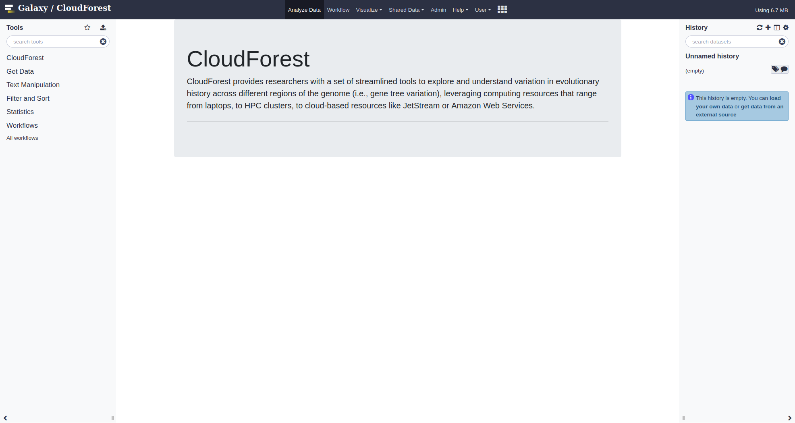
The right panel shows your processing history. Each entry in the history is a file: either imported from your local file space or the results of a computation.
The center panel will contain all the options for a selected tool. You will launch the tool by clicking Execute after specifying options.
The left panel contains all the tools available for use.
◈
You access all tools from the left panel, click on CloudForest to open the subpanel:
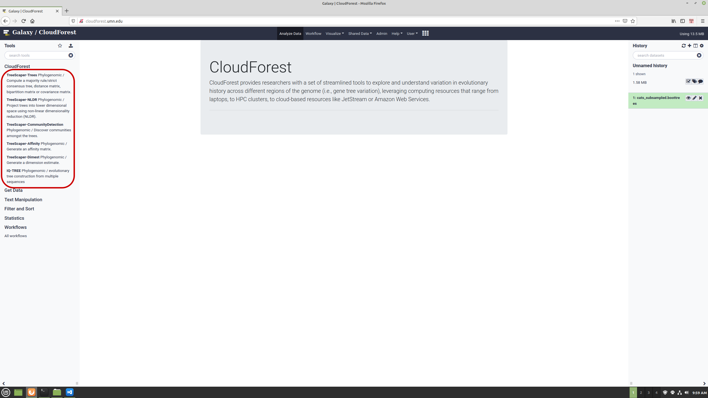
Click on any tool to show its options:
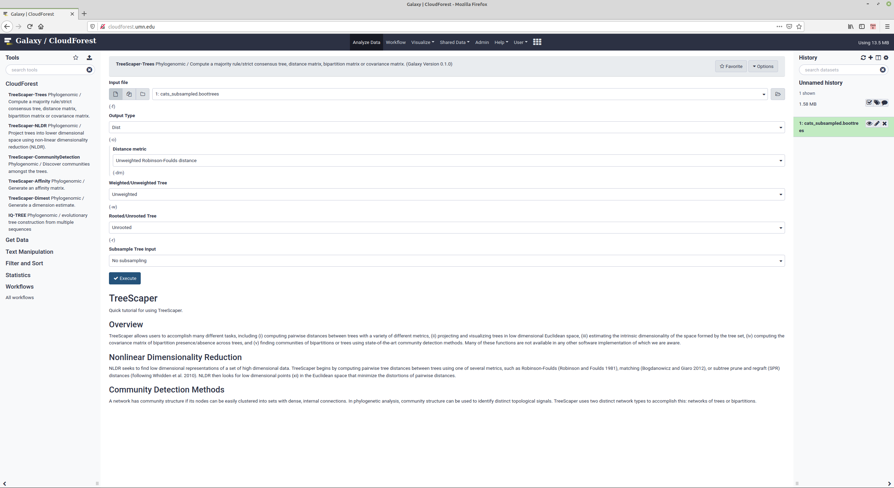
In this example, the options for the -trees argument are made available. The first history entry, cats_subsampled.boottrees has been uploaded to CloudForest and is the start of the data analysis.
Clicking on Execute starts the compute job. In the right history pane, you can see the four outputs that will be produced from the job run. Once the entries change from gray to green, the job is complete and the outputs are ready for further processing or inspection.
For instance, you can run NLDR on history entry 5 Distance Matrix from data 1 to generate a non-linear dimension reduction of the generated trees.
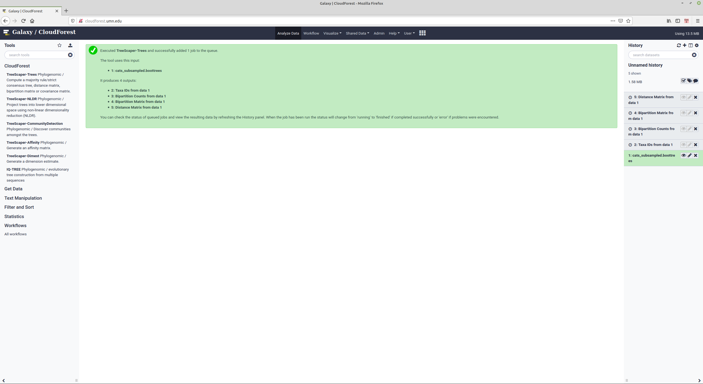
◈
There are constructed workflows available for use. These workflows string together mutliple tools with common options selected. You can override the configured options before starting a workflow.
Reading from left to right: - Start with a set of bootstrapped trees, you will select the specific input - Generate a distance matrix - Generate a 20D NLDR matrix from the distance matrix - Generate an affinity matrix from the 20D matrix - Run community detection based on the generated affinity matrix
Once the workflow starts, barring errors, it will run until the final output is produced. All intermediate datasets will be saved and will be available for inspection or as inputs to other compute jobs.
There will be ten data sets after the workflow finishes. Each asterix in the tools boxes shown below is a data file.
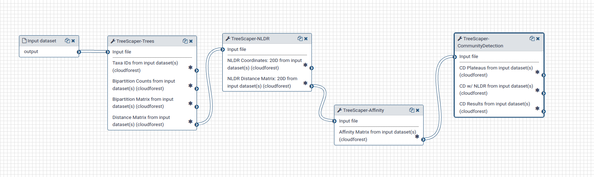
◈
The raw data of a computed data set can be viewed from within CloudForest. On any history entry, click on the eye icon. 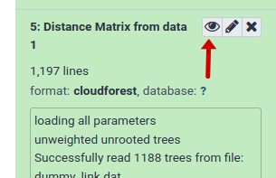
This will open the raw data within a computed data set. The data will appear within the central pane.
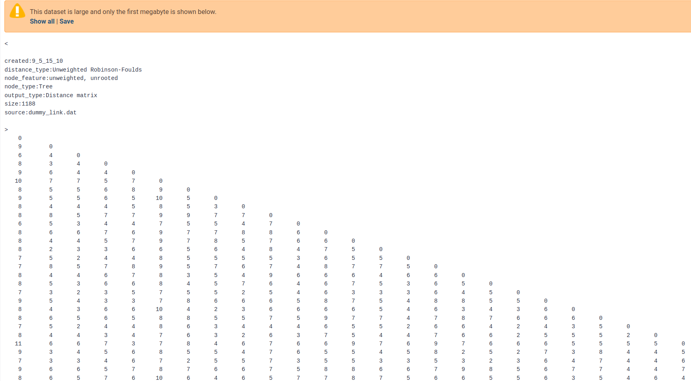
CloudForest datasets can be visualized directly from the CloudForest application. Within each data entry, you can click on the Visualize this data button
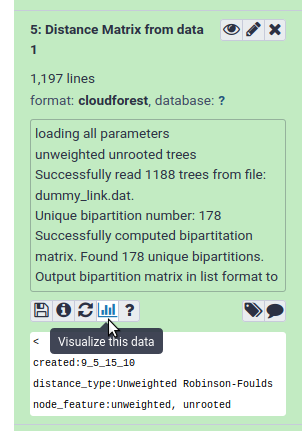
Then click on the CloudForest Visualizations link in the center pane. This will open the CloudForest visualization application.
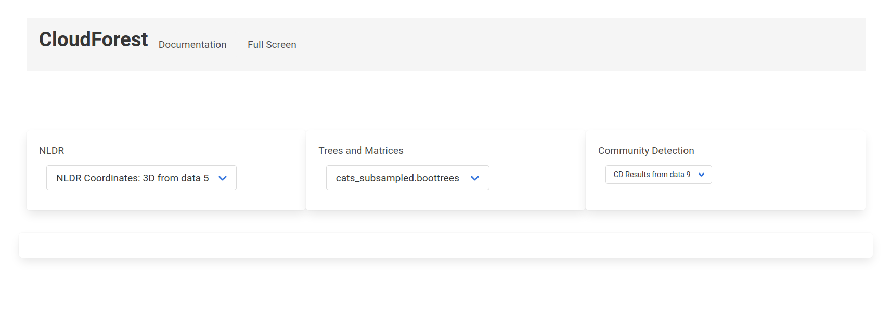
The available plots and visualizations are arranged in three categories: - NLDR Plots - 2D - 3D - High Dimension Plots - Trees and Matrices - Treesets (Newick) - Consensus Tree - Affinity Matrix - Covariance Matrix - Communtiy Detection - CD Results
Click on any dropdown item to visualize the file. For example, choosing NDLR Coordinates: 3D from data 5 will produce a fully interactive 3D plot
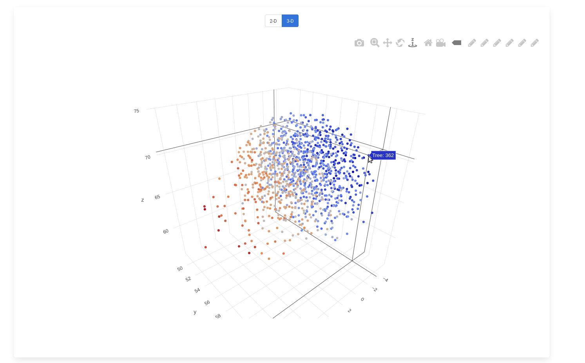
In this screen capture the trees have been color coded based on the x-axis. Highlighting a data point will let you know what tree is associated with the point. Click on the data point will open the tree itself.
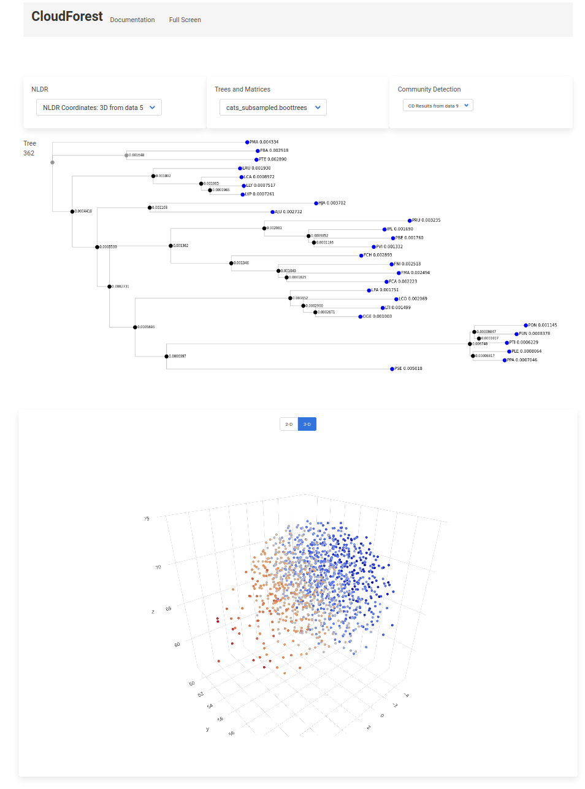